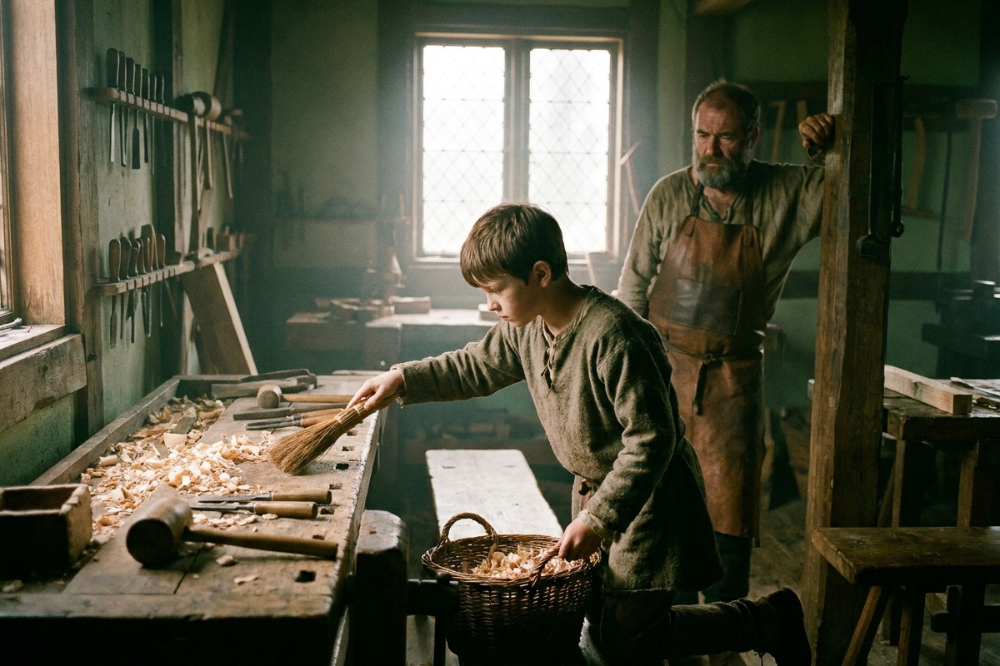
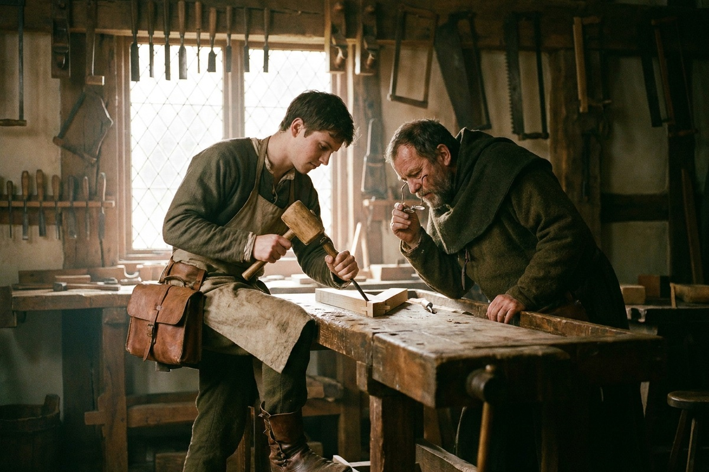
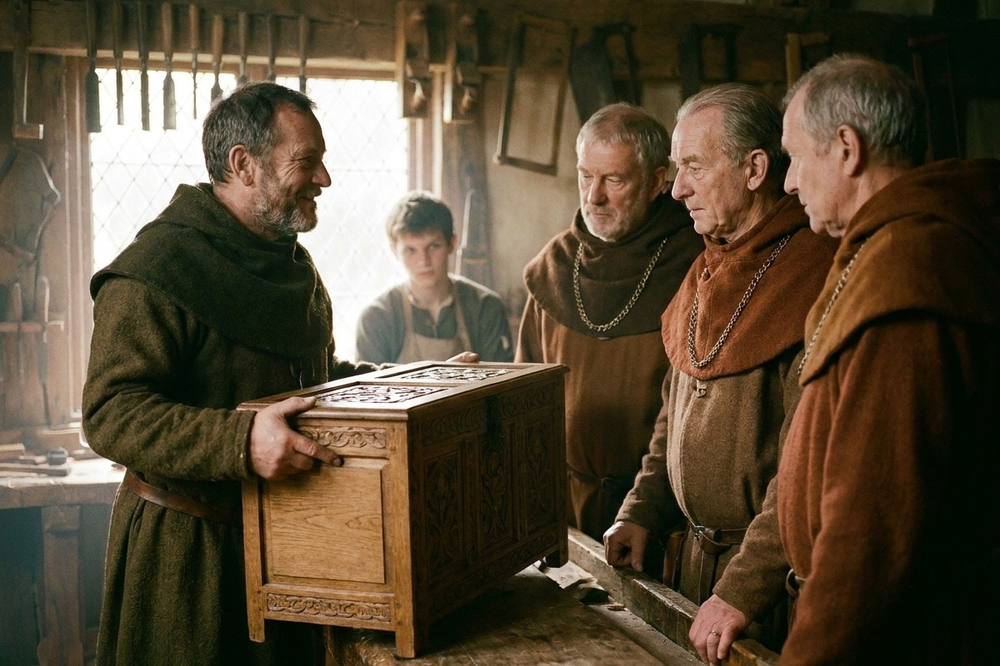

The tools keep changing. The five questions behind them never have.
How do we organise?
What is the work worth?
Who is ready?
How do people grow?
Where do we find them?
c. 9500 BCE · Göbekli Tepe, Anatolia
Before the farm, the team.
Hunter-gatherers raised rings of stone pillars weighing several tonnes. Nobody lifts one alone, so somebody had to decide who cuts, who hauls and who feeds the crew.
Question oneHow do we organise?Today: Organization Strategy. Structure, people and process pulling the same way.
c. 3300 BCE · Uruk, Mesopotamia
The first payslip was paid in beer.
Among the oldest writing we have is a clay record of rations owed to workers. Pay was written down before poetry was.
Question twoWhat is the work worth?Today: Total Rewards. Pay and benefits people can trust and compare.
A2 Blender macro tablet
c. 1157 BCE, Deir el-Medina. The rations arrive late. The tomb builders put down their tools. It is the first recorded strike.
ReconstructionAn examination compound: long rows of single cells, one candidate in each.
Imperial China · later dynasties
Merit, not birth.
Public office goes to whoever passes a written examination. The system runs for about 1,300 years, until 1905.
Question threeWho is ready?Today: Assessment & Succession. Know what good looks like, then close the gap.
Medieval Europe · the craft guilds
Nobody is born ready.

1 / 3
Apprentice
Years beside a master. You learn by watching, then by doing the dull parts well.

2 / 3
Journeyman
You take the craft on the road and earn a day's wage in other people's workshops.

3 / 3
Master
One piece of work, judged by peers. The original meaning of a masterpiece.
Question fourHow do people grow?Today: Leadership & Professional Development. Learning for everyone from new hire to executive.
1911 to 1943 · Philadelphia
A job becomes a coordinate.
In 1911 Frederick Taylor put a stopwatch on the task. In 1943 Edward Hay founded a firm on a harder idea: weigh the job, not the person.
By the early 1950s its Guide Charts scored any role on three factors.
Questions one and two get a methodJob evaluationStill the backbone of grading and pay benchmarking in Total Rewards and Organization Strategy.
1911 · Time the task
1943 · Weigh the job
Three factors
Points
Grades & pay
Time study · 1911Task card · Worker No. 47Shovel, carry, load. Every motion timed to the second.
00:00.0
Job evaluation · 1943The job: Plant supervisorNot the person in it. What the role demands.
Know-how0
Problem solving0
Accountability0
Total 0 points
Guide ChartKnow-how × Accountability
Know-how →
Accountability →
Illustrative scores, not real Hay points
1959 to 1973 · the knowledge economy
When the asset is a mind, you go and find it.
Question fiveWhere do we find them?Today: Talent Acquisition. The right people at every level.
1959
The knowledge worker gets a name
Peter Drucker describes a workforce paid to think.
1969
One phone, one assistant, a Rolodex
Lester Korn and Richard Ferry open an office in Los Angeles. The door already says International.
1973
Competence over IQ
Harvard's David McClelland argues for testing what predicts success in the job.
TOBGETHHER
2006 to today
Five answers. One firm.
For most of history each question had its own specialists. Then the threads met.
2006Lominger. Leadership competencies.
2013PDI Ninth House. Assessment and coaching.
2015Hay Group. Rewards and organisation.
2026AMS. Talent acquisition and outsourced recruitment at scale.
Board & CEO ServicesThe table at the top.
Business TransformationAll five threads, moving at once.
2026 · the next shift
The tools changed again. The questions did not.
AI is rewriting how work gets done, faster than any shift before it. The answers still start in the same five places.
How do we organise?Organization Strategy
What is the work worth?Total Rewards
Who is ready?Assessment & Succession
How do people grow?Leadership & Professional Development
Where do we find them?Talent Acquisition
Who leads the leaders?Board & CEO Services
How do we change?Business Transformation
Korn Ferry Talent SuiteLaunched January 2026. Five decades of the firm's data and method on one platform.